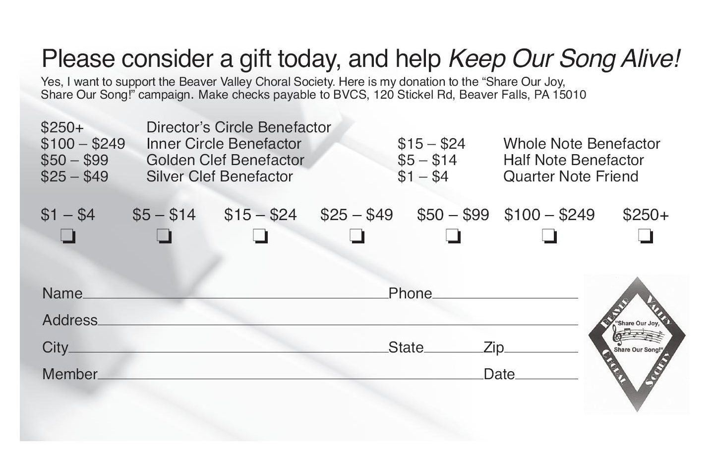

Donate to the Beaver Valley Choral Society
Simply open the form below by clicking on it, printing it out, and mailing it back
with your tax deductable donation.
Please make checks payable to Beaver Valley Choral Society and mail them to:
Beaver Valley Choral Society
120 Stickel Road
Beaver Falls, PA 15010
You will need Adobe Reader to open and print the form below. Download it for free here
